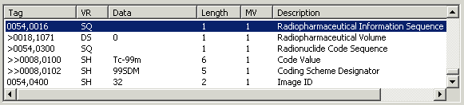

The IDLffDicomEx object provides methods for reading and writing pixel data to a DICOM file, and for specifying the data compression. Other methods let you add, modify, or remove public and private DICOM attribute tags, public and private sequences, and sets of repeating tags within sequences. See DICOM Sequence Items below for details. Other methods allows you to output all tags in a DICOM file to an ASCII file or to an IDL structure. You can also copy subsets of tags from one file to another.
A DICOM file contains DICOM attributes or data elements, which are composed of:
The basic attrib ute structure is shown in the following figure.

A DICOM attribute, identified by a (gro up number, element number) tag may be public or private. Attributes with an ev en group number are defined by the DICOM standard and are referred to as public tags. Attributes with an od d group number can be defined by users of the file format, but must conform to the same structure as standard elements. These are referred to as private tags.
A DICOM attribute may be a s equence , which is a data element with a value representation of "SQ." A sequence is an attribute that acts as a container for one or more items. A sequence can contain individual items, additional (nested) sequences of items, or sets of repeating items. These sets of repeating tags are identified as groups in this document.
The IDLffDicomEx object supports reading and writing to compressed files on Windows and UNIX platforms. There is no support for the JPEG compression algorithms on Ma cintosh. Using IDLffDicomEx properties and methods, you can return and modify the compression of a file. Use the IDLffDicomEx Overview property to return the Transfer Syntax UID (0002,0010) associated with the DICOM file. Use the IDLffDicomEx::ChangeTransferSyntax method to change the transfer syntax of an object. The IDLffDicomEx object supports the following transfer syntaxes.
|
Compression Type |
Transfer Syntax UID |
Description |
|
Implicit VR Little Endian |
1.2.840.10008.1.2 |
Default transfer syntax for DICOM |
|
Explicit VR Little Endian |
1.2.840.10008.1.2.1 |
Little Endian data encoding |
|
Explicit VR Big Endian |
1.2.840.10008.1.2.2 |
Big Endian data encoding |
|
JPEG Baseline |
1.2.840.10008.1.2.4.50 |
Default Transfer Syntax for Lossy JPEG 8 Bit Image Compression |
|
JPEG Extended (Process 2 & 4) |
1.2.840.10008.1.2.4.51 |
Default Transfer Syntax for Lossy JPEG 12 Bit Image Compression (Process 4 only) |
|
JPEG Lossless, Non-Hierarchical |
1.2.840.10008.1.2.4.70 |
Lossless JPEG Image Compression. First-Order Prediction (Process 14 [Selection Value 1]) |
|
JPEG 2000, Lossless Only |
1.2.840.10008.1.2.4.90 |
Lossless, reversible wavelet and color component transformation, and no quantization. |
|
JPEG 2000, Lossy |
1.2.840.10008.1.2.4.91 |
Lossy, irreversible wavelet transformation and color component transformation, and optional quantization. |